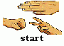
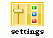
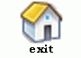
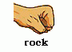
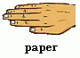
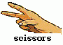
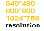
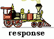

“Rock, Paper, Scissors” game is demonstration of PNL and OpenCV libraries integration. A computer chooses next move with using PNL features. Visual interface is realized with using OpenCV.
Every move each of two players chooses one of three items: either rock or scissors or paper. We suppose that rock beats scissors, scissors beats paper, paper beats rock. A player which selects a right item increases his score by 1 point. The goal is to collect more points than another player. The main feature of this game is ability to operate the game with out mouse and keyboard. Input of information is realized via web-camera (a user control the game making special motion which computer can understand).
To play this game you need a web-camera connected to your computer, installed OpenCV library and Windows OS.
To choose next move computer uses a simple Bayesian network which consists of three tabular nodes. The network is shown on the picture below.
Each node has three states: rock, paper and scissors. The current computer turn depends on the previous computer turn and the previous human turn. At the beginning of game all nodes have uniform distribution. After every move the network is learnt with using all statistics we have by now. The statistics is a set of all combinations {previous computer turn, previous human turn, the turn computer should make to win} collected since the start. For example if at some iteration previous computer turn is paper, previous human turn is rock and human selects scissors then three-tuple {paper, rock, rock} will be added to the statistics.
Open RPS.dsw in IDE VS 6.0. Add paths to headers (*.h) and to library (*.lib) files of OpenCV (Tools->Options->Directories): OPENCV\CV\INCLUDE OPENCV\CXCORE\INCLUDE OPENCV\OTHERLIBS\HIGHGUI OPENCV\OTHERLIBS\CVCAM\INCLUDE OPENCV\LIB Make sure that corresponding configuration of pnl and pnlhigh projects were built. Build CVGUI project.
When program starts it prints all cameras connected to the computer in console window. By default the game selects camera #0. To select another camera you should run the game with an optional parameter “index of the camera”.
The main window is video stream from your web-camera with drawn icons. Each icon is a possible action in the game. To select an icon you should move your hand in the area of this icon.
An important notice! The proper exit is possible with using visual interface only. If you can’t exit with using visual interface (for example it is dark in the room where you are) then you should close the process via Task Manager.
There are three menu items in the game:
 Start the game. Select this item to start the game.
 Settings of the game. Select this item to show and change settings.
 Exit the game. Select this icon to exit the game.
There are rock, paper, scissors and exit items in the game menu:
, , , .
You can make your move selecting either rock or paper or scissors item. Or you can exit to the main menu selecting exit item.
There is a score field at the bottom of the screen. In case of activated help mode (show distribution: yes in the settings menu) there is also a field with probability distribution of possible computer moves (probabilities of rock, paper and scissors) in the centre of window. When human makes move computer shows it’s and human’s moves in the center of window and changes the score.
To return to the main menu you should select exit item.
To enter the settings menu you should select item settings in the main menu.
There are 4 menu items in the settings menu:
Help mode. Select this item to active or deactivate help mode. When help mode is activated computer shows probability distribution of it’s possible moves.
 Change size of the window. You can choose between 640*480, 800*600 and 1024*768 possible resolutions.
 Change speed of computer reaction for motion (how long computer should register motion in the area of item to activate it).
Return to the main menu. Select this icon to return to the main menu.